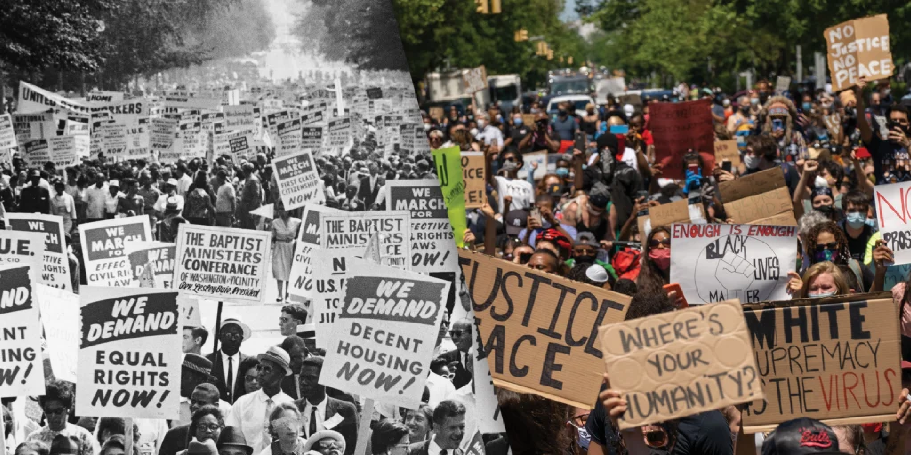

Black Lives Matter (BLM), international social movement, formed in the United States in 2013, dedicated to fighting racism and anti-Black violence, especially in the form of police brutality. The name Black Lives Matter signals condemnation of the unjust killings of Black people by police (Black people are far more likely to be killed by police in the United States than white people) and the demand that society value the lives and humanity of Black people as much as it values the lives and humanity of white people. Black Lives Matter (BLM), international social movement, formed in the United States in 2013, dedicated to fighting racism and anti-Black violence, especially in the form of police brutality. The name Black Lives Matter signals condemnation of the unjust killings of Black people by police (Black people are far more likely to be killed by police in the United States than white people) and the demand that society value the lives and humanity of Black people as much as it values the lives and humanity of white people.Black Lives Matter (BLM), international social movement, formed in the United States in 2013, dedicated to fighting racism and anti-Black violence, especially in the form of police brutality. The name Black Lives Matter signals condemnation of the unjust killings of Black people by police (Black people are far more likely to be killed by police in the United States than white people) and the demand that society value the lives and humanity of Black people as much as it values the lives and humanity of white people. BLM activists have held large and influential protests in cities across the United States as well as internationally. A decentralized grassroots movement, Black Lives Matter is led by activists in local chapters who organize their own campaigns and programs. The chapters are affiliated with the Black Lives Matter Global Network Foundation, a nonprofit civil rights organization that is active in the United States, Canada, and the United Kingdom.
BLM was cofounded in 2013 as an online movement (using the hashtag #BlackLivesMatter on social media) by three Black community organizers—Patrisse Khan-Cullors, Alicia Garza, and Opal Tometi. They formed BLM after George Zimmerman, a man of German and Peruvian descent, was acquitted on charges stemming from his fatal shooting of Trayvon Martin, an unarmed Black teenager, in Sanford, Florida, in February 2012. Zimmerman, a neighbourhood-watch volunteer, had seen Martin walking in his neighbourhood and called the police because he thought Martin looked “suspicious.” Although Zimmerman was told not to do anything, he followed Martin, got into an argument with him, and shot and killed him. When law enforcement arrived, Zimmerman claimed that he had been assaulted by Martin and fired in self-defense.
Zimmerman remained free for weeks, but, as the shooting gained national attention, demonstrations demanding his prosecution were held in cities across the United States. He was finally charged with second-degree murder and arrested in April 2012. At his trial more than a year later, Zimmerman claimed that he had acted in self-defense, citing a controversial Florida law known as “stand your ground.” His acquittal in July 2013 was widely perceived as a miscarriage of justice and led to further nationwide protests.
The BLM movement expanded in 2014 after the police killings of two unarmed Black men, Eric Garner and Michael Brown. Garner died in Staten Island, New York, after a white police officer held him in a prolonged illegal choke hold, which was captured in a video taken by a bystander. Brown, a teenager, was shot and killed by a white police officer in Ferguson, Missouri. These deaths—as well as the refusal of prosecutors to bring charges against the officers—led to large protests in the name of Black Lives Matter, which captured national and international attention. The BLM movement thereafter continued to play a prominent role in demonstrations against police brutality and racism. Notably, BLM activists protested the deaths at the hands of police or while in police custody of several other Black people, including Sandra Bland, Philando Castile, Freddie Gray, Laquan McDonald, Tamir Rice, Walter Scott, and Alton Sterling.
In May 2020 George Floyd, an unarmed Black man, was pronounced dead after Derek Chauvin, a white Minneapolis police officer, knelt on Floyd’s neck for more than nine minutes, despite Floyd’s repeated protests that he could not breathe. Wide circulation of a bystander’s video of Floyd’s last minutes triggered massive demonstrations in cities throughout the United States and across the globe. The tragedy also brought to national attention the earlier deaths of two other African Americans: Ahmaud Arbery and Breonna Taylor. In February 2020 Arbery was jogging in Glynn county, Georgia, when two white men, believing he might have committed a series of break-ins, began following him in a truck. The men, who had guns, confronted Arbery, and a struggle ensued, which resulted in the fatal shooting of Arbery. The following month in Louisville, Kentucky, Taylor, an emergency medical technician, was killed during a botched police raid at her apartment. Although Arbery and Taylor had initially received little media coverage, in the wake of Floyd’s death they also became the subject of nationwide demonstrations.
These events swayed American public opinion in favour of the Black Lives Matter movement while drawing wide attention to the problem of entrenched racism in American society. There were calls for greater police accountability, and in 2021 Chauvin was found guilty of murder. It was a rare case of police violence resulting in a conviction.
Shooting of Trayvon Martin, fatal shooting of Trayvon Martin by George Zimmerman in Sanford, Florida, on February 26, 2012. The shooting exposed deep divisions among Americans on race issues.
Martin, a 17-year-old African American, was returning from a convenience store when he was noticed by Zimmerman, a neighbourhood-watch volunteer of German and Peruvian ancestry. Zimmerman contacted the nonemergency line of the Sanford Police Department, mentioned that there had been burglaries in the neighbourhood, and told the dispatcher that he had observed “a real suspicious guy” who was “walking around, looking about.” Zimmerman also described Martin as someone “up to no good, or he’s on drugs or something.” The dispatcher communicated to Zimmerman that the police did not need him to follow Martin, but Zimmerman, nevertheless, left his vehicle. He later said he had done so in order to ascertain his location by taking a closer look at a street sign. A violent confrontation ensued, and Zimmerman fired his weapon at Martin at close range, causing Martin’s death. When police arrived, Zimmerman argued that he had been assaulted by Martin, who was unarmed, and fired in self-defense. Concluding that they could not hold Zimmerman—because no evidence contradicted his version of the event and because state law permitted the use of deadly force in self-defense—the police released him.
In the following weeks, as Zimmerman remained uncharged, the shooting drew increasing attention. On March 12 the chief of the Sanford Police Department affirmed that no criminal charge could be filed against Zimmerman, mainly because of the absence of probable cause. A day later, however, a Sanford police investigator assigned to the case recommended that Zimmerman be charged with manslaughter, on the basis that the violent encounter between the two men could have been avoided. Zimmerman remained free, which was seen by many as an injustice, and demonstrations demanding his prosecution for murder were organized in cities across the United States. In April 2012 the governor of Florida, Rick Scott, appointed a special prosecutor for the case, who brought a criminal charge of second-degree murder against Zimmerman.
Zimmerman’s trial—which began more than a year later, in June 2013—received intensive media coverage. The prosecution argued that Martin’s death resulted from Zimmerman’s profiling of him as a criminal and trying to take the law into his own hands. The defense argued that the evidence corroborated Zimmerman’s version of the event—namely, that he fired his weapon because Martin was attacking him and that he felt that his life was threatened. Central elements of the incident, however, could not be ascertained. For instance, witnesses disagreed on which of the two men could be heard screaming for help on a recorded call to emergency services.
Although the original criminal charge brought against Zimmerman was second-degree murder, the judge also gave the jury the option of convicting him of the lesser charge of manslaughter. In order to find Zimmerman guilty of second-degree murder or manslaughter, the jury had to find not only that Zimmerman had caused Martin’s death but also that he did not do so in self-defense. The issue of self-defense was linked to Florida’s law permitting the use of deadly force to defend oneself against a perceived threat—known as a “stand-your-ground” law—which was central to debate over the shooting. Instructions to the jury referenced the law, but Zimmerman’s lawyers ultimately did not invoke Zimmerman’s rights under it, because, they argued, he did not have the option to retreat anyway. On July 13, 2013, after more than 16 hours of deliberation, the jury declared Zimmerman not guilty.
Martin’s death heightened a debate over the persistence of racism in the United States and in particular over the issue of racial profiling. In March 2012 Pres. Barack Obama—the first African American president of the United States—expressed his dismay at the shooting, saying that “if I had a son, he’d look like Trayvon.” Later Obama compared Martin to his younger self and characterized racial profiling as a reality that most African Americans, including himself, have had to face. Protests continued across the United States in the wake of the Zimmerman verdict and led to the formation of the prominent Black Lives Matter social movement, which focused on better treatment of African Americans in all facets of American society.
work cited: https://www.britannica.com/event/shooting-of-Trayvon-Martin